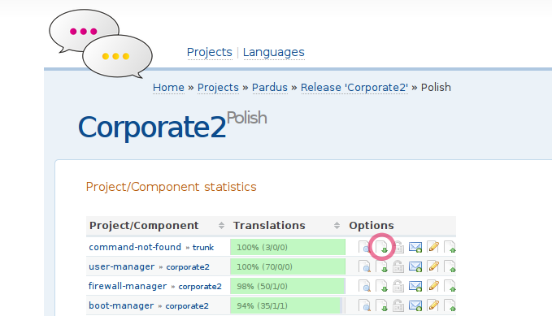
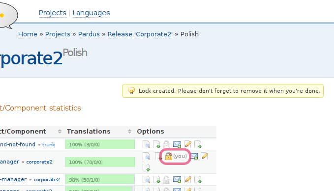
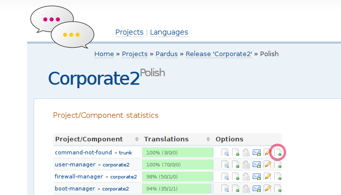
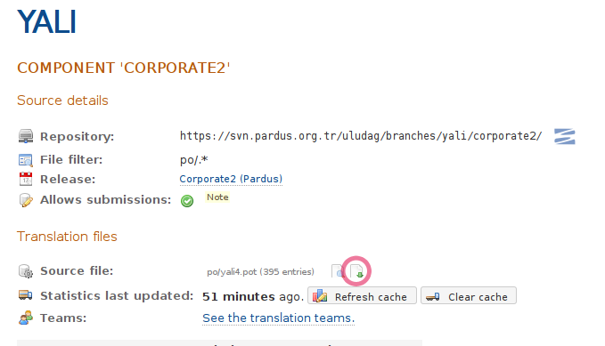
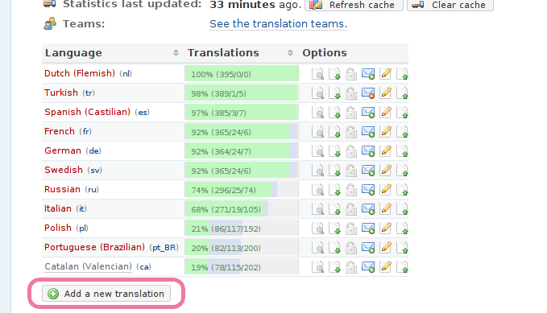
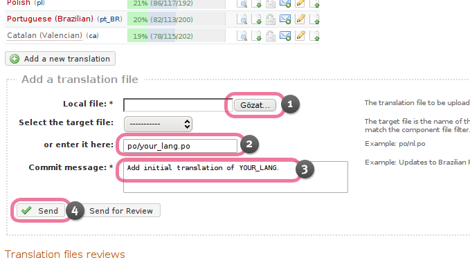
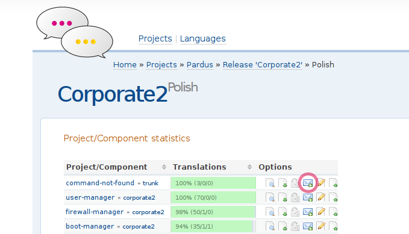
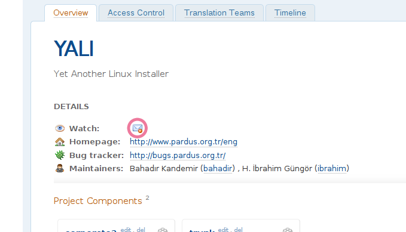

Quick Guide to Pardus Translations¶
Subscribing to the Mailing List¶
- Pardus uses Transifex to help translators keep track of translation projects. Register yourself to Transifex at http://translate.pardus.org.tr. Please, do not forget to update your Transifex account page. It’s mandatory to fill the Name and Surname informations. These informations are going to be shown in commit log.
- Visit http://lists.pardus.org.tr/mailman/listinfo/pardus-translators and subscribe to this mailing list. pardus-translators [at] pardus.org.tr e-mail address is the unique channel that we communicate each other. Developers are announcing the string freeze date or an urgent translation state on this address. So, it’s better to follow this mailing address reqularly to be aware of any translation related topics.
- It is better to subscribe to development mailing list in order to keep syncronized with other developers. Use the link below: http://lists.pardus.org.tr/mailman/listinfo/pardus-devel.
- If you want to see your translation commit, visit http://lists.pardus.org.tr/mailman/listinfo/uludag-commits. You can follow all translation updates ( and other technical commit mails as well) from this mailing address.
- Wait for the confirmation emails from you’ve just registered or subscribed services. These e-mails contains a link to confirm your subscription, click the link to confirm your subscription.
Creating a Bugzilla Account¶
- Visit http://bugs.pardus.org.tr to create a Bugzilla account. This is useful for translators since there could be a bug in a translation file’s source (POT) and you should file a bug in order to warn the project maintainer. This is not mandatory of course.
- You are now a fully recognized member of Pardus community, capable of submitting contributions, submitting bugs and following the discussions of our groups.
Introducing Yourself¶
- Post a short self introduction to the pardus-translators mailing list. Please remember to include your Transifex user name and your language. With this information, language coordinator can identify you for language team joining approval.
Requesting Team Membership¶
- After you’ve successfully accomplished the steps above, you are ready to translate Pardus to a language that you want. Just click the “Join This Team” button at the language page that you want to join. If you filled the needed information on your Transifex account page and done the steps above, the language coordinator will approve your membership request and you’ll be able to ready to translate.
Obtaining and Translating Projects¶
You may need to communicate with other translators in your language team to avoid conflict. If you are not sure, please contact your language coordinator.
Visit your language page such as http://translate.pardus.org.tr/transifex/languages/l/pl/, and select a target release. The interface will redirect you to a page for that release, such as http://translate.pardus.org.tr/transifex/projects/p/pardus/r/corporate2/l/pl/.
Scroll down the page to find the table of all projects available for that release.
Use the marked button or similar next to each project to download the po file.
Before starting to translate any translation file, please make sure that none of the translators are working on the file you choose. Transifex eases this kind of conflicts with an icon indicating that a translator is working on the file. See the marked icon below:
If noone is working on the file, as indicated by the icon, you can safely translate the file. First step is to lock the file by clicking the lock button. This way, you tell that you are working on the file and going to unlock it when the translation is done and commited.
Now you are aware of the workflow and begin translating. Translate the po file to your language in a PO editor such as Lokalize.
Check the integrity of your file before you commit it.
msgfmt -c --statistics pl.po
Committing Projects¶
Once you finished your translation work, commit the file using the same interface.
Use the upload button marked below for your language next to each project, then click the browse button to locate your translated file.
Select the Send to commit your translated file.
Interface displays the message File submitted successfully. If you receive an error or some other message except success, please post it to the pardus-translators mailing list so it can be addressed.
Adding Non-Existing Translation File¶
If there is no translation file for your language, please do the following steps:
Download the POT file and copy it as your own language’s po file.
Once you finish the translation, click on the button marked below.
Type your new file name in the field marked replacing the file name with your locale. See the image:
po/your_lang.po
Being Aware of Translation Updates¶
Transifex supports notifications per many events. One of them is PO updates. If you want to receive notifications when a project developer updates translation files, you should click the Watch button, as seen below:
You can watch every languages po file updates or may want to watch only your language’s translation updates, it’s up to you.
One notification that is useful as well is that watching a project’s events. If you want to receive notifications when a project has any update, such as a translator joins a team or a new project is added etc., click the related project’s Watch button. See the image:

Last Modified Date: October 26, 2011
| Author: | Halil İbrahim Güngör |
|---|